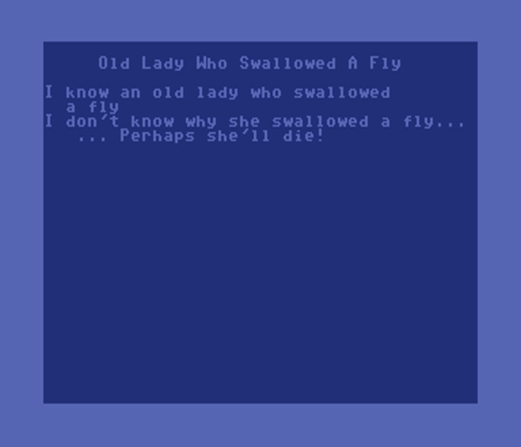
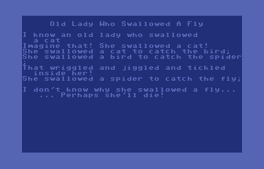

Mike's BASIC Beginnings
Old Lady WHo Swallowed a Fly
August 9, 2020
Screen Shots
Program Listing
Comments



1 rem rosetta code 2 rem old lady who swallowed a fly - c64 5 print chr$(147);chr$(14) 10 dim a$(10),ex$(10),mu$(8,3):a=1 15 for i=1 to 8:read a$(i),ex$(i):next i:gosub 2500 20 for c=1 to 8 30 print chr$(147):print " Old Lady Who Swallowed A Fly ":print 40 print "I know an old lady who swallowed" 45 print " a ";a$(c):m$=mu$(c,1):gosub 2000 50 for bc=c to 1 step -1 55 if bc=c or bc<=2 then print ex$(bc):m$=mu$(bc,2):gosub 2000 57 if bc=8 then for t=1 to 2000:next 60 if bc>1 then print "She swallowed a ";a$(bc)" to catch the "a$(bc-1)";" 61 if bc>1 then m$=mu$(bc,3):gosub 2000 65 next bc 70 print " ... Perhaps she'll die!" 72 m$=mu$(1,3):gosub 2000 75 get k$:if k$="q" then end 77 if k$>"0" and k$<"9" then c=asc(k$)-49 80 print:for t=1 to 1000:next t 90 next c 100 end 1000 rem lyrics 1010 data "fly","I don't know why she swallowed a fly..." 1020 data "spider","That wriggled and jiggled and tickled inside her!" 1030 data "bird","How absurd to swallow a bird!" 1040 data "cat","Imagine that! She swallowed a cat!" 1050 data "dog","What a hog, to swallow a dog!" 1060 data "goat","She just opened her throat and swallowed a goat!" 1070 data "cow","I don't know how she swallowed a cow!" 1080 data "horse","...She died, of course!" 1100 rem music (optional) 1110 data "8cffaffcffa4f","8ggg4g8feec2c","8c4d8e4f":rem fly 1120 data "8cffaffcffaff","8fgggggfeccc4c","8cffaffc4f8a4f":rem spider 1130 data "8cffaffcffa4f","4g8g4g8feec2c","8cffa4f8c4f8a8ff":rem bird 1140 data "8cffaffcffa4f","8c4g8g4g8feec2c","8cffa4f8c4f8a4f":rem cat 1150 data "8cffaffcffa4f","4g8g4g8feec2c","8cffa4f8c4f8a4f":rem dog 1160 data "8cffaffcffa4f","8ccggg4g8feec2c","8cffa4f8c4f8a4f":rem goat 1170 data "8cffaffcffa4f","8ggg4g8feec2c","8cffa4f8c4f8a4f":rem cow 1180 data "8cffaffcffa2f","4c2d4e2f","8cffa4f8c4f8a4f":rem horse 2000 rem note player 2005 for z=1 to len(m$):el$=mid$(m$,z,1) 2010 if el$>="a" and a$<="g" then gosub 2050 2015 if el$>="1" and el$<="8" then du=int(ms/(asc(el$)-48)) 2020 next z:return 2050 rem play note 2055 n=asc(el$)-64 2060 poke 54272,nt(n,2):poke 54273,nt(n,1):poke 54276,17 2065 for i=1 to du:next i:poke 54276,16 2070 return 2500 rem set up sound table and sid 2505 dim nt(7,2):nt(3,1)=16:nt(3,2)=195 2506 nt(4,1)=18:nt(4,2)=209 2510 nt(5,1)=21:nt(5,2)=31 2515 nt(6,1)=22:nt(6,2)=96 2520 nt(7,1)=25:nt(7,2)=30 2525 nt(1,1)=28:nt(1,2)=49 2530 nt(2,1)=31:nt(2,2)=165 2535 poke 54296,15:poke 54277,9:poke 54278,0 2540 du=250:ms=1000 2550 for i=1 to 8:for j=1 to 3:read mu$(i,j):next j:next i 2599 return
This is the classic nursery song... Sung programatically! I had some fun with this one.
The version of BASIC (version 2) on the Commodore 64 is not as robust the BASIC versions on later Commodore computers like the Commodore 128. I decided to build a music interpreter similar to the one that came built in to Commodore BASIC version 7. With that in place, the program needs only very minimal tweaks to allow it to run on the Commodore +4 and the Commodore 128.